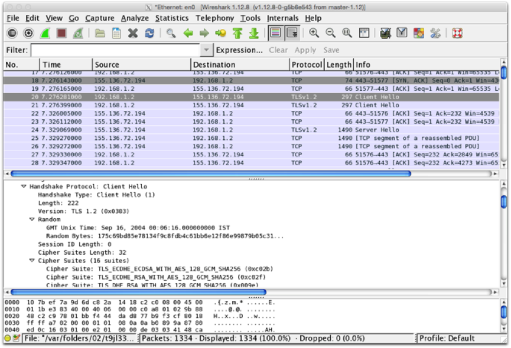

The objective of this lab is to learn about configuring TLS on web servers.
In this exercise, you will:
Set yourself up as a Certificate Authority (Part A)
Configure web server security (Parts B & C)
The term Certificate Authority (CA) refers to anyone who issues (i.e. signs) digital certificates. As we'll see below, anyone (even you!) can be a CA, though certain CAs are widely trusted on the Internet and their certificates are accepted by browsers that support them.
Most widely-recognised certificate authorities charge a fee for issuing certificates. Examples are Comodo GoDaddy, DigiCert and GlobalSign. Some have free trial certificates with short validity period (e.g. 30 days). There are also some free services, including Let's Encrypt. In practice, this is where you would get a certificate for a production server. For the purposes of this lab, however, we will generate our own.
To be a CA, you create a public/private key pair and issue yourself with a certificate containing this public key. This cert will be self-signed, meaning you'll be signing it with your private key.
Launch Linux or other environment that has OpenSSL installed and start a terminal session. You can use a local Linux machine or you can create an AWS EC2 instance and connect to it using SSH.
We first create a 2048-bit RSA private key for the CA
openssl genrsa -out myca.key 2048The key is created in PEM format, which is printable:
cat myca.keyNow use this to create a certificate signing request (CSR) for the certificate authority (so the CA can sign its own key):
openssl req -new -key myca.key -out myca.csrYou will be prompted for identification data for the subject of this signing request. Make up an identity for your "pretend" CA (e.g. Highly Secure Certificates Ltd, or suchlike). Don't enter any challenge passwords, etc.
Now, as CA, use your private key to issue a (self-)signed certificate based on the CSR:
openssl x509 -req -trustout -signkey myca.key -sha256 -in myca.csr -out myca.crtThe resulting certificate is valid for just 30 days (default). If you would like it to last longer (e.g. a year), run again with the additional option -days 365
openssl genrsa -out webserver.key 2048openssl req -new -key webserver.key -out webserver.csrGet the CA, using its private key, to sign the server’s CSR file:
openssl x509 -req -CA myca.crt -CAkey myca.key -sha256 -CAcreateserial -in webserver.csr -out webserver.crtYou now have a web server public key, signed by a third party (the CA), in the file webserver.crt. You also have the web server's private key in the file webserver.key that you generated above.
(Optional) You could alternatively have got your web server to self-sign its certificate. The command for this is:
openssl x509 -req -in webserver.csr -signkey webserver.key -sha256 -out webserver_self.crtThe next step is to configure your web server to be able to locate these keys. We will do this with two different web servers.
We will use hapi.js to deploy a basic "Hello world" web application that is secured using our newly-created keys.
(Optional) If you'd like to do this on an AWS EC2 instance, ensure that your instance is launched into a security group that allows inbound traffic to TCP ports 22, 80, 443, 3000 and 3443. The following commands will install a recent version of node.js, npm, and hapi on Amazon Linux 2.
curl -o- https://raw.githubusercontent.com/creationix/nvm/v0.34.0/install.sh | bash
. ~/.nvm/nvm.sh
nvm install 10.15.3
npm install hapiMake a folder (called private, for example) in a Hapi application and copy your webserver.key and webserver.crt files there. You may use an application you are working on, the "donation" demo app, or download the very basic application provided here.
Edit the code for server creation to use a different port and specify the locations of the key file and the certificate file respectively:
const fs = require('fs');
const server = Hapi.server({
port: 3443,
tls: {
key: fs.readFileSync('private/webserver.key'),
cert: fs.readFileSync('private/webserver.crt')
}
});
Next start the server (this assumes we've saved the edited file as hapi_tls_example.js)
node hapi_tls_example.jsTest that it’s working by pointing a web browser to https://localhost:3443 (replace localhost if published elsewhere).
Replace the reference to webserver.crt with webserver_self.crt as created in step 2, restart node and browse again to https://localhost:4443. Have a look at the certificate trust chain and see the difference.
Here, we similarly configure an Apache server to listen for HTTPS connections.
Create an EC2 instance and connect to it with SSH.
Install apache, enable at startup, and start service.
sudo yum update -y
sudo yum install httpd -y
sudo systemctl enable httpd
sudo service httpd startYou should now be able to browse to the public IP address of your instance and see the Apache test page.
Have a look at the log files created at /var/log/httpd/ (need to use sudo to see them). These logs are particularly useful for finding configuration errors, especially with TLS.
sudo yum install mod_ssl -yCopy your server certificate and private key to a suitable location – e.g. /etc/pki/tls/certs and /etc/pki/tls/private
sudo cp webserver.crt /etc/pki/tls/certs
sudo cp webserver.key /etc/pki/tls/privateNow edit the Apache SSL configuration file /etc/httpd/conf.d/ssl.conf with nano or any text editor
sudo nano /etc/httpd/conf.d/ssl.confLook down through the file for SSLCertificateFile and point it to where you put webserver.crt. Likewise see SSLCertificateKeyFile and point it to webserver.key
You may wish to change the document root to something different from the HTTP site. If you leave it unchanged then the HTTP and HTTPS versions will point to the same content.
Finally, restart apache:
sudo service httpd restartEdit your instance's security group to allow incoming connections to port 443.
Enter the following in a web browser:
https://ip_address(replacing ip_address with your instance’s public IP address)
You'll get a warning as your certificate is signed by a CA that your browser doesn't trust. You should be able to view the certificate and verify that it's the one that you created.
Using Wireshark or equivalent, capture the setup of a TLS session from a browser to a web server. It should start with a "Client Hello" message, something like that shown here: 
Trace the TLS handshake. What TLS version is used? What Cipher Suite does the browser prefer? Does the server match this? Try a variety of browsers and web servers and see if you can find examples where they don't match.
You can also force browsers to only use an up to date version and/or cipher – e.g. TLSv1.3. Are there any disadvantages in doing this? There are various test suites available that allow you to try old browser versions – e.g. https://crossbrowsertesting.com or https://www.browserling.com